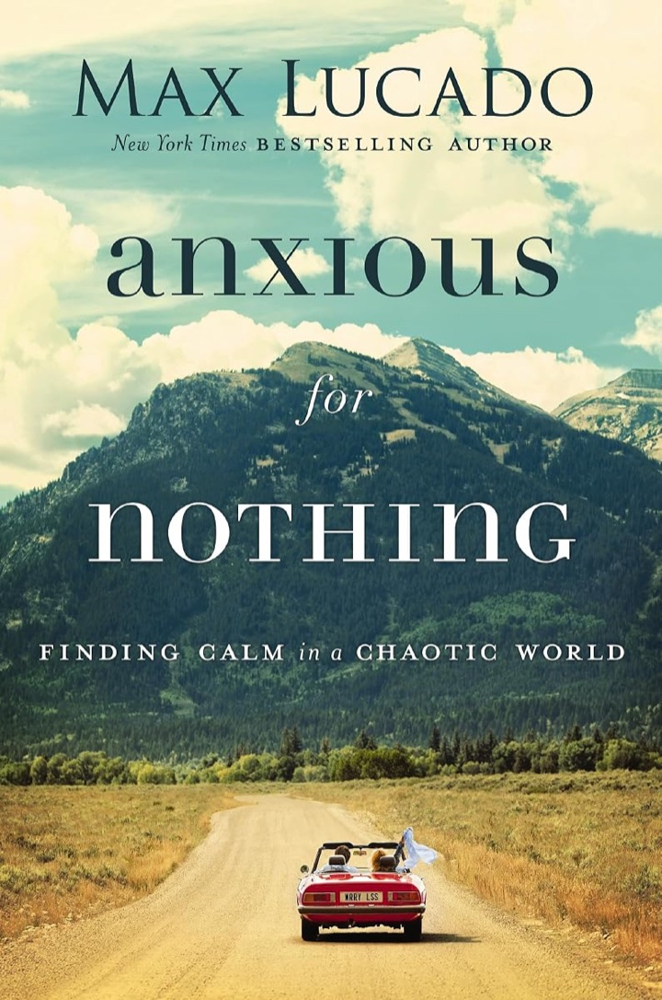

Max Lucado turns five verses from a prisoner's letter into a four-step routine for the moments when worry takes over.
11 chapters4 sections5 verses1 acronym

What if? What if? What if?Calm
The big idea
Anxiety will visit. It doesn't have to move in.
Lucado, a pastor writing for Christian readers, separates two things we often blur. Fear responds to something in front of you. Anxiety is a low, drifting dread about what might happen some day: a steady stream of what-ifs that costs you sleep, laughter and breath.
His reading of Paul's command is gentler than it sounds. The Greek tense points to an ongoing state, so Paul is taking aim at a life of constant anxiety, not at every anxious moment. Feeling anxious, Lucado insists, is an emotion and not a sin. It becomes a problem when it drives how we act: numbing, raging, abandoning people. Christians add a second layer, feeling guilty for being worried, and that spirals.
He is also clear that a pep talk won't wave it away. For some readers, he writes, healing will include therapy or medication, and needing them makes no one a lesser believer.
The rest of the book unpacks Philippians 4:4–8, which he reads as four instructions leading to one promise. Their initials spell C.A.L.M.
“Fear sees a threat. Anxiety imagines one.”
Max Lucado, ch. 1
~50M
Americans feel the effects of an anxiety disorder in a given year, he reports, citing the National Institute of Mental Health.
$300B
Yearly US cost of stress-related ailments, in medical bills and lost productivity.
⅕
The anxiety level he reports for people in other countries, compared with Americans, despite having fewer basic necessities.
No. 1
Philippians 4:6–7 is the most highlighted passage on Kindle, he notes, in Kindle's most highlighted book, the Bible.
Why now? He names change, speed, personal crises and ageing. Researchers he cites speculate that the Western world has changed more in thirty years than in the previous three hundred.
Is worry weighing you down? Lucado's warning signs, in short
You laugh less than you used to
Every promise comes with a problem attached
People close to you find you more negative
You expect something bad to happen
You talk good news down
Many mornings, bed beats getting up
The negative looms, the positive doesn't count
You'd gladly avoid other people for good
Most of these sound familiar? That's when he sends you to the passage.
Four steps, in this order. Lucado's one firm rule about the order: face God before you face the problem. The study guide suggests keeping the acronym somewhere you'll see it.
C.A.L.M. · Philippians 4:4–8
C
Celebrate God's goodness
“Rejoice in the Lord always” (v. 4)
Look away from the problem for a few minutes. Dwell on who God is: in control, merciful, able to use even this.
What's bigger than this worry?
A
Ask God for help
“Let your requests be made known to God” (v. 6)
Boil it down to one sentence. Name exactly what you need, and build the request on a promise.
What exactly am I asking for?
L
Leave your concerns with him
“with thanksgiving” (v. 6)
Hand it over like a broken toaster at the repair shop, and don't hover. Meet each anxious thought with a thankful one.
What do I already have?
M
Meditate on good things
“meditate on these things” (v. 8)
Stick to the facts. Turn away the exaggerations. Fill the freed-up space with what is true and good today.
What's actually true right now?
The promise, v. 7“the peace of God, which surpasses all understanding” guards heart and mind.
The M step: Paul's eight-part filter
1True
2Noble
3Just
4Pure
5Lovely
6Of good report
7Virtuous
8Praiseworthy
Name one real thing in your life today for each word, as Christyn Taylor did (ch. 9). Can't hold eight words in your head? Neither can Lucado. His shorter version is in ch. 10: stay close to Christ, who he says fits the whole list.
Where the step list came from
The card follows Lucado's own mapping of the passage, which isn't one line per verse. L is anchored in the thanksgiving of verse 6, while the handing-over comes from his chapter on leaving things with God. Verse 5, on gentleness and the Lord's nearness, has no letter. He files it under A as the reason asking makes sense.
The questions in mono on the card are mine, a memory aid. The steps are his.
The core framework
Two trees to climb
Lucado reads the passage as a decision tree: a sequence of choices, each with a consequence. His pun for the two options is the anxie-tree and the tranquili-tree.
2:30 a.m. A new job in six hours. A twitch in your neck. Is it a tumor?
Anxie-tree
1Stare at the problem. It grows the longer you look.
2Despair, or tell God it's too much.
3Hover. Stay at the workbench and keep checking.
4Let every exaggerated thought land.
Mind divided: back in the past, out in the future, never here.
Tranquili-tree
CFace God first. The problem shrinks to its proper size.
APray instead of despairing: specific, built on a promise.
LLeave it there. Replace anxious thoughts with grateful ones.
MUse the freed-up space for good things.
Heart and mind guarded, attention back in today.
A diagram of ch. 11. The opposite path is pieced together from what he warns against at each step. The word Lucado digs up here is merimnaō, the Greek for worry: he breaks it into divide and mind. Gratitude helps because it pulls attention back to the present.
01Less Fret, More Faith
Name it, then find the way out
Worry is widespread and human, and it isn't the whole story of your life.
The chapter stacks up the data: spending on anti-anxiety drugs like Xanax and Valium rose from $900 million to $2.1 billion between 1997 and 2004, and a study of more than 200,000 incoming US freshmen found record-low mental health.
He closes on a memory. His father did the rounds each night in West Texas, checked the locks, and told his boys all was secure. That's the voice Lucado wants readers to hear from God.
Section 1 · Chapters 2–4 · C
Celebrate God's goodness
Joy here is a decision, not a mood. Lucado says Paul isn't asking for nonstop gladness but for settled confidence that God exists, is in charge and is good. Three chapters give three reasons.
02Rejoice in the Lord's Sovereignty
You can't run the world, so stop trying
Anxiety grows when control seems to shrink. His answer isn't more control but trusting someone who has it.
Beliefs work like the two cast-iron poles in the huge army-surplus tent of his childhood: unseen, and the reason everyone ran to that tent in a storm. Belief comes before behaviour, so change the belief.
Paul was about sixty, scarred by five floggings and three beatings with rods, awaiting trial before Nero. Yet Lucado finds no word of fear or complaint in the letter to the Philippians.
Isaiah's king Uzziah died after keeping Judah safe for 52 years. God's answer, he says, wasn't to remove the problem but to show the prophet that heaven's throne was occupied.
Jeremiah models the deliberate turn: he lists his misery, then purposely calls God's faithfulness to mind.
The control trap, and the way out of it
The most stressed people, he claims, are the ones trying hardest to control things, because they keep failing at what they want most.
Perceived control beats actual safety
WWII fighter pilots killed in action50%
Fighter pilots happy in their assignment93%
Ground troops, by contrast, were found to be emotionally dead after sixty days of continuous combat. The pilots had their hands on the throttle; the infantry could be killed standing still or running. Traffic makes the same point in miniature: he cites German researchers who found a jam triples your chance of a heart attack.
Source: studies cited in ch. 2
The story
On a shaky four-seater over the Brazilian interior, Lucado kept squirming and gripping his seat. The missionary pilot finally shouted that nothing lay ahead that he couldn't handle, so Lucado might as well let him fly. Lucado hears God saying much the same.
03Rejoice in the Lord's Mercy
Under the busy schedule sits old regret
Guilt drives the truck and anxiety rides in the back. Grace, he says, settles what guilt stirs up.
He starts with himself: drunk at sixteen after promising his father he wouldn't be, and a slide from I did bad to I am bad.
Adam and Eve show the order. Guilt came first, and hiding and dread followed it.
Paul had orchestrated the deaths of Christians and had a perfect religious résumé besides. He gave up both records and handed his guilt to Jesus. A happy saint, Lucado says, takes sin seriously and grace more seriously.
At twenty, in a church seat he could still point to, Lucado met this grace. In the forty years since, he says, other anxieties have come, but not guilt-based ones.
Nine ways we try to process guilt, and none of them work
Each one leaves you hiding and pretending. Which do you reach for first? His alternative isn't a tenth technique. It's to let someone else take the bill, as a church member once did at the restaurant where Lucado was eating.
The image
Henri Nouwen learned from the trapeze troupe the Flying Rodleighs that the flyer doesn't grab the catcher. He stretches out his arms and waits. Lucado casts God as the catcher.
04Rejoice in the Lord Always
An alarm that won't switch off
Always includes the bad days, because Lucado believes God puts even those to use.
The amygdalae are your home alarm, and you need them. They get you out of the road before you've had a thought. The trouble is a system that fires at every breeze.
Joseph is the test case: thrown in a pit by his brothers, sold, falsely accused, then forgotten in prison for two years by the butler who promised to help.
Lucado rejects a God who started the world and left. He argues God sustains and steers everything, without cancelling free will. The brothers meant harm, and God rerouted it.
The two-word weapon is but God. The company is downsizing, but God still reigns. The cancer is back, but God is on the throne. You choose, he says, to wear your hurt or your hope.
Why a stuck alarm wears you out
His claim: the brain restores itself with calming chemicals such as dopamine and serotonin, but they can't do their work if the alarm never stops. The curves are illustrative, not data.
The story
Horatio Spafford lost much in the 1871 Chicago fire. In late 1873 his four daughters drowned when their ship sank; his wife cabled that she alone was saved. Sailing to fetch her, he wrote the lyrics of the hymn It Is Well with My Soul. The handwritten page hangs in the American Colony Hotel in Jerusalem.
Section 2 · Chapters 5–6 · A
Ask God for help
So far Paul has described God's character. Now it's the reader's move. Fear, Lucado says, sets off either despair or prayer, and that's a choice.
05Contagious Calm
One steady person can turn a crisis
The Lord is near, so you can stop acting as if everything rests on you.
Gentleness (epieikes) doesn't mean softness here. He reads it as level-headed and fair, the opposite of panic. Others notice it and catch it.
Verses 5 and 6 belong together, he argues, since chapter and verse divisions came much later. Read straight through, the logic is the Lord is near, therefore don't be anxious.
Before feeding the five thousand, the disciples had watched Jesus do eleven wonders that Lucado lists. It still didn't occur to them to ask. They counted coins. Fed crowd, twelve baskets left, and not a coin of the two hundred spent.
The practice: before you open the ledger, count how many times you've been helped through the impossible.
The story
In 1962 a Soviet submarine sat under US depth charges off Florida, after three weeks of heat above 120°F. The captain was ready to fire. Vasili Arkhipov, 36, took him aside and talked him out of it. The public learned of it only in 2002.
The image
Eleven-year-old Bill Frey spent hours failing to pull a stump. His father said he wasn't using all his strength: he hadn't asked him. Deep-rooted worries, Lucado says, are like that.
06Prayer, Not Despair
Make the worry small enough to pray
Vague dread is heavy. A specific request has edges.
Jesus' parable of the widow and the crooked judge teaches by contrast. Lucado retells it with a Porsche and a persistent Ethel. If even that judge gives in, God is far readier, and you aren't at the back of the line.
He sorts Paul's three words: prayer is general devotion, supplication is humble asking, request is a precise petition.
He warns against treating this as a formula. God isn't impressed by technique or eloquence, and the method gives you no right to dictate terms.
On good days he starts with coffee and goes through the day's meetings with God. When stress comes up later, he reminds himself he already handed that over.
Three reasons to get specific
It's serious
A vague drop-in sometime means little. Friday at seven with a real problem shows you mean it.
You see results
A precise request lets you notice a precise answer, and faith grows. Abraham's servant asked for a specific sign at the well.
It lightens
Anxieties threaten because they're ill-defined. Put one into a phrase and it comes down to size.
Vague
Please bless my meeting tomorrow.
Specific
A 2 p.m. meeting with a boss who scares me: sleep tonight, wisdom to prepare, a kinder tone between us.
His example, shortened. One more move: start with You said… and hold up a promise that fits, such as being walked through the waters (Isaiah 43:2) or never being left (Hebrews 13:5).
Section 3 · Chapters 7–8 · L
Leave your concerns with him
The hardest step for a worrier: not taking it back. Lucado pairs it with gratitude, then shows what the handed-over life looks like when the storm doesn't stop.
07Great Gratitude
Leave the river, enter the valley
The good life starts when your attitude to circumstances changes, not the circumstances.
The river If Only
One purchase, promotion or romance away. You borrow, work late and worry you'll never cross. Each win delivers joy that fades, so hope and letdown become a roller coaster.
The valley of Already
Look at what you've been given: friends, family, abilities, grace. Treat each anxious thought with a thankful one. He claims worry and thanks can't share one heart.
He cites studies linking gratitude to more empathy, less envy, better self-esteem, sleep, relationships and longevity.
Paul in chains says he has learned a secret of contentment. The secret, on Lucado's reading, is a different list: eternal life, God's love, forgiveness. In the letter's 104 verses, he counts forty mentions of Jesus, one every 2.5 verses.
Contentment that depends on circumstances leaves you wounded. Contentment rooted in Christ can't be confiscated, he says, and he runs death, failure, betrayal, sickness and disappointment past that test.
The story
His friend Jerry, 78, cares for his wife Ginger, who has Parkinson's. Each morning they sing a hymn. She always picks Count Your Blessings, and they do.
08God's Peace, Your Peace
Storms stay. Peace comes anyway.
You do your part and God does his. What God adds, Lucado says, is no mood but his own peace, as a gift.
Each factor alone is manageable. Together they lasted fourteen days without sun or stars, and the sailors gave up. Your version might be a lost job in a downturn, or an illness during a move. Then Paul, a preacher among sailors, stood up with one rebuke and three promises.
Rebuke
You should have listened. Some storms we made. Stand corrected, confess, be wiser, and don't despair.
Helpers
An angel stood by Paul. Daniel's answer took 21 days to arrive, so a silent sky doesn't mean you're unheard.
Belonging
Paul served the God to whom he belonged. Like a parent signing the camp form, God has taken responsibility for you.
Service
God wasn't finished with Paul, who still had Rome ahead. You won't live one day less than planned.
The offer wasn't that the ship would be saved. All lives would be, but not the vessel. Your ship may be your marriage, your body or your business, and he doesn't pretend losing it is painless.
King Jehoshaphat faced three armies with fasting, prayer and an honest confession that he didn't know what to do. Then he sent singers ahead of the army. Lucado's lesson is to lead with worship.
He calls this a peace beyond logic: you should be upset, and you aren't.
Section 4 · Chapters 9–11 · M
Meditate on good things
The most practical section. You can't pick your circumstances, Lucado says, but you can pick what you think about.
09Think About What You Think About
You run the control tower
Your problem, he says, isn't your problem. It's the way you look at it.
The mental airport
Thoughts circle overhead. One lands only with your permission. Lucado attributes the exaggerated ones to Satan. The test is a question put to Jesus: is this from you?
The doctor calls: anxiety
I'm being punished. It's probably a tumour. Who'll raise the kids? I'll die broke and alone.
The doctor calls: facts
The doctor called. The news will be good or bad. I don't know which yet. All I can do now is pray and trust.
Paul's word logizomai is related to our word logic, Lucado notes. His point: meet anxiety with clear thinking, and don't amplify.
Thoughts have consequences. Count blessings, memorize verses and sing, or assume the worst and complain to complainers.
He tried this on himself while editing the book. Moving his 83-year-old father-in-law into their home set off a meltdown. So he listed each small good turn, from trailer hitch to furniture buyer, as a sign of God's presence.
The story
Christyn Taylor's daughter Rebecca had endured more than fifty-five surgeries and procedures and about a thousand hospital days by thirteen. When the phrase possible hemorrhagic stroke took over her thoughts, Christyn went through Paul's list word by word, naming one present blessing for each: dinner together, her sons' ordinary days, Rebecca asleep in her own bed.
10Cling to Christ
Try less hard. Hang on tighter.
A branch doesn't strain to produce grapes. It stays on the vine.
Lucado confesses he can't remember Paul's eight virtues, let alone filter his thoughts through them. Turning the list into a rulebook only adds anxiety.
So he reduces it to one aim: stay attached to Christ. Jesus uses abide ten times in seven verses of John 15. Fruit, including peace, follows as a by-product.
Abiding means being at home: safe, comfortable, familiar. It's a four-year-old's single job on a crowded street, which is holding a parent's hand, not memorizing the map.
Look at birds, consider lilies, and draw the conclusion: if they're cared for, so are you.
Claim a block of time. One friend uses her daily ninety-minute commute for worship and scripture. Or turn off the news, or set the alarm fifteen minutes earlier.
The story
Dr. Kent Brantly quarantined himself in Liberia on July 23, 2014, waiting for an Ebola test, and spent the wait with Hebrews and his journal. When it came back positive, his wife Amber, in Abilene, couldn't find words to pray and sang old hymns under a mesquite tree. He recovered after an untested treatment.
11C.A.L.M.
Awake at 2:30, and still human
Anxiety doesn't prove you've failed. Jesus was anxious in Gethsemane, Lucado says, but didn't stay there.
He runs the four steps as one sequence (see the two trees). Peter walking on the water supplies the C: he was fine until he looked at the waves.
L gets the repair-shop picture. You don't stay to help the repairman or unroll a sleeping bag on his floor. When God wants you back on the job, Lucado says, he'll tell you.
The sign-off is a resolve to live only today: learn from yesterday without living in it, give tomorrow a glance, and meet today's challenges with today's strength.
“I hereby resign as ruler of the universe.”
The phrase Lucado asks readers to repeat, ch. 11
The story
At nineteen, selling books door to door in Georgia and sleeping in a shelter, Lucado bought a rubber lemon magnet in a Dalton diner and stuck it on the dash of his '73 Plymouth Duster. Doors kept slamming. He kept rubbing the lemon. He survived the summer.
Takeaways
The toolkit
The same ideas, sorted by when you need them. The book's closing study guide, by Jessalyn Foggy, offers more for each chapter under two headings: Confront the Chaos and Choose Calm.
In the moment
Run the cardC, A, L, M, in order. Don't skip the first step.
Say but GodFinish the fearful sentence with what you believe is still true.
Facts onlyWrite what you actually know. Cross out the rest.
Check before you fireStepping aside before you speak can defuse things, as Arkhipov did with his captain.
Every day
Coffee and requestsGo through the day's meetings at the start. Later, remember they're already handed over.
Count blessings out loudTurn each if only into an already, as Jerry and Ginger do.
Claim a block of timeA commute, or fifteen minutes before the alarm. Swap some news for scripture.
Keep a request journalThe study guide's suggestion. Specific requests make specific answers visible.
When it stays
Look for buried guiltIf the calendar isn't the real problem, ask what you're still hiding from.
List the good turnsIn a long crisis, log each small help, as Lucado did with the trailer hitch.
Remain before GodIf nothing seems to come back, remember Daniel's three weeks.
See a professionalLucado says to look for a qualified counsellor or physician if needed. It's no failure of faith.